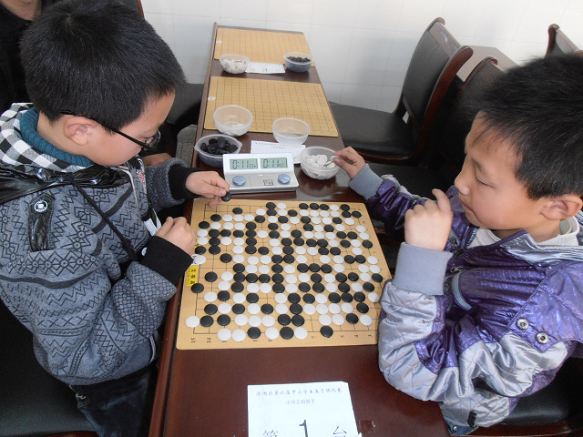
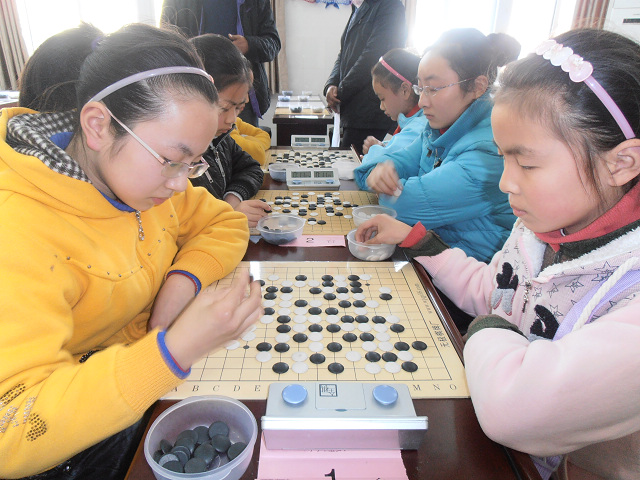
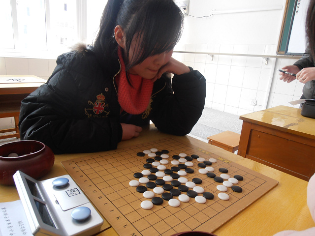
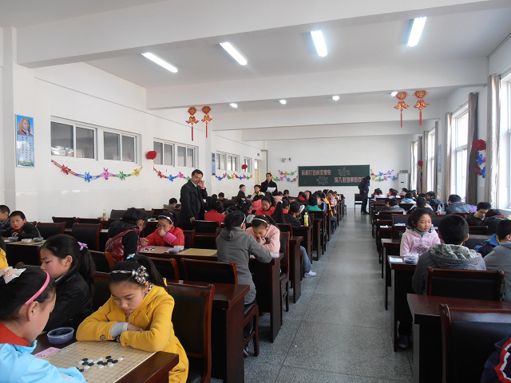
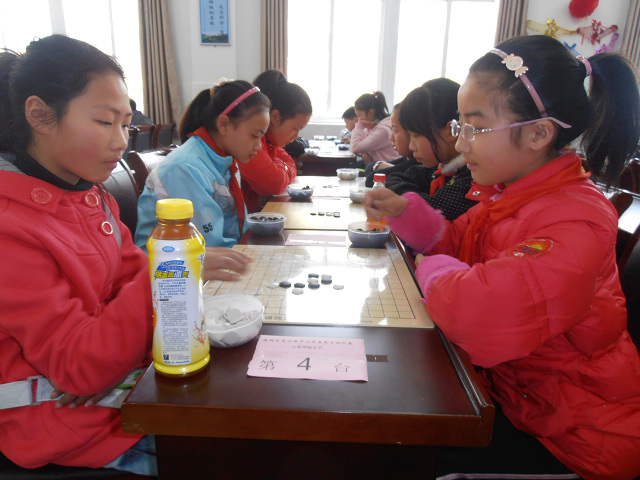
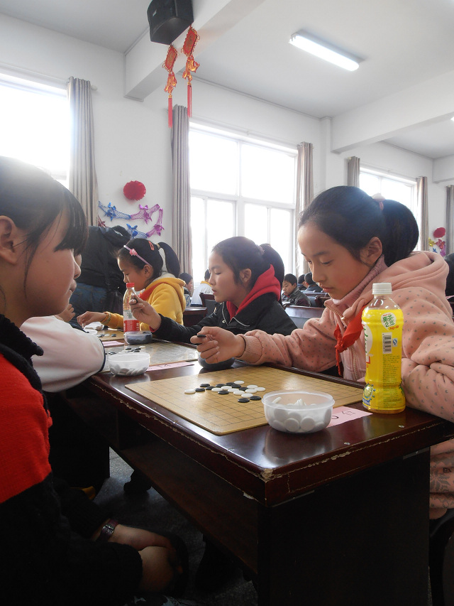
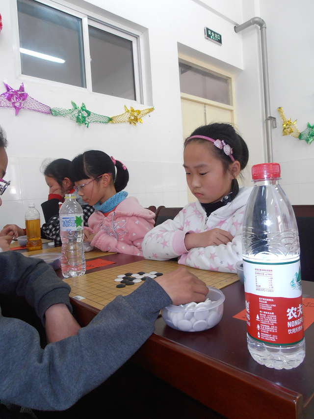

港闸区第六届中小学生五子棋比赛第二天掠影
首页
少儿五子棋
#1 港闸区第六届中小学生五子棋比赛第二天掠影 作者：黄药师 发表时间：2012-4-1 22:13:02







#2 Re:港闸区第六届中小学生五子棋比赛第二天掠影 作者：梧桐风 发表时间：2012-4-1 23:00:19
给农夫山泉做广告啦～
#3 Re:港闸区第六届中小学生五子棋比赛第二天掠影 作者：五子天涯 发表时间：2012-4-2 10:44:22
好可爱的孩子们！
#4 Re:港闸区第六届中小学生五子棋比赛第二天掠影 作者：小小亦默 发表时间：2012-4-2 12:36:06
基本满盘~
#5 Re:港闸区第六届中小学生五子棋比赛第二天掠影 作者：有志青年 发表时间：2012-4-2 16:37:15
关于这一局，还有故事哟，对局双方为最终的冠亚军（积分赛，不是冠亚军决赛），这一轮，亚军执白，冠军执黑，执白方围绕那个长连禁手，不停的进攻，执黑方小心的防守，最终长连造成了。
但是
这个长连点，是整个棋盘上唯一的一个空点了，整个棋盘都摆满了。
此时
轮到黑方行棋，白方得意的笑……
黑方长考之后，提出pass
白方傻眼了
也pass
最终和棋
一群教练赶过来
啊？pass是什么？
哈哈，这是比讲解规则有效多了。
#6 Re:港闸区第六届中小学生五子棋比赛第二天掠影 作者：小小亦默 发表时间：2012-4-2 22:59:34
哈哈 俩小朋友 哈哈
#7 Re:有志青年【==Re:港闸区第六届中小学生五子棋比赛第二天掠影==】 作者：问题不大 发表时间：2012-4-2 23:33:58
哈哈哈，PASS，太有意思了！
#8 Re:港闸区第六届中小学生五子棋比赛第二天掠影 作者：木梳炉石 发表时间：2012-4-30 23:15:03
还有这一手 学习啦